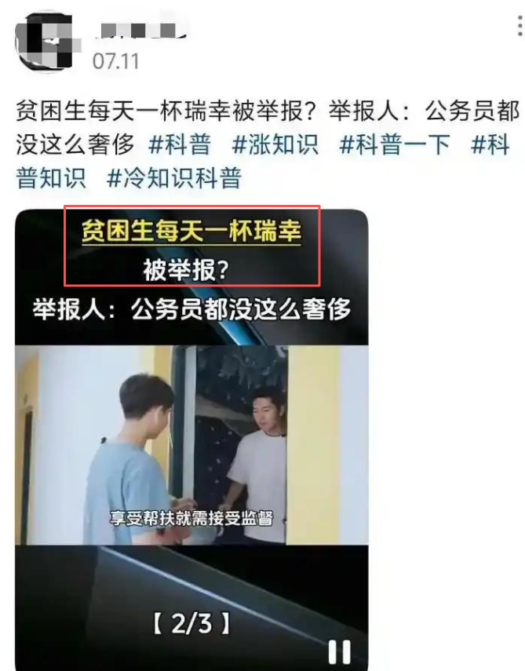

索瑟尔 𝓢𝓸𝓻𝓬𝓮𝓻𝓮𝓻🍥🏳️🌈
@Sorcerer1311
我喝9.9的咖啡也嫌贵…
大部分时候都是外卖三四块才喝的
要不就是喝魔爪或者胶囊咖啡

Sen Ye
@SenYe10
真是炸裂，现在大学也有各种奇葩
一个拿 4500元最高档助学金的贫困女大学生，就因为每天一杯9.9元的瑞幸，竟然被同学连续蹲了37天取证后实名举报
这位女大学生，有个固定的习惯，每天早八上课前，都会去校内的瑞幸门店买一杯九块九的团购咖啡。
就这么个不起眼的日常，被同班的同学悄悄盯上了。 https://t.co/dTcDstLuUe